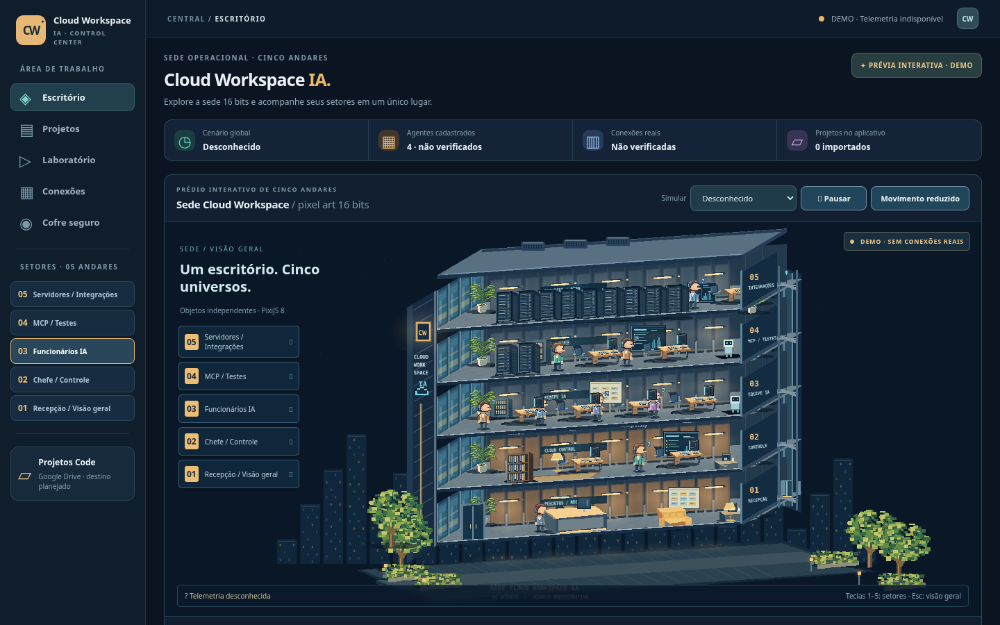
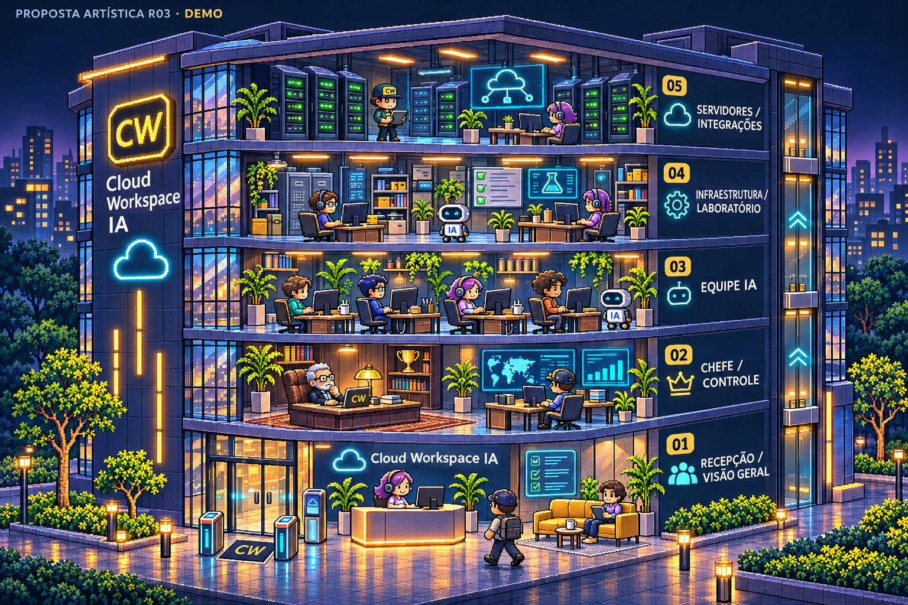
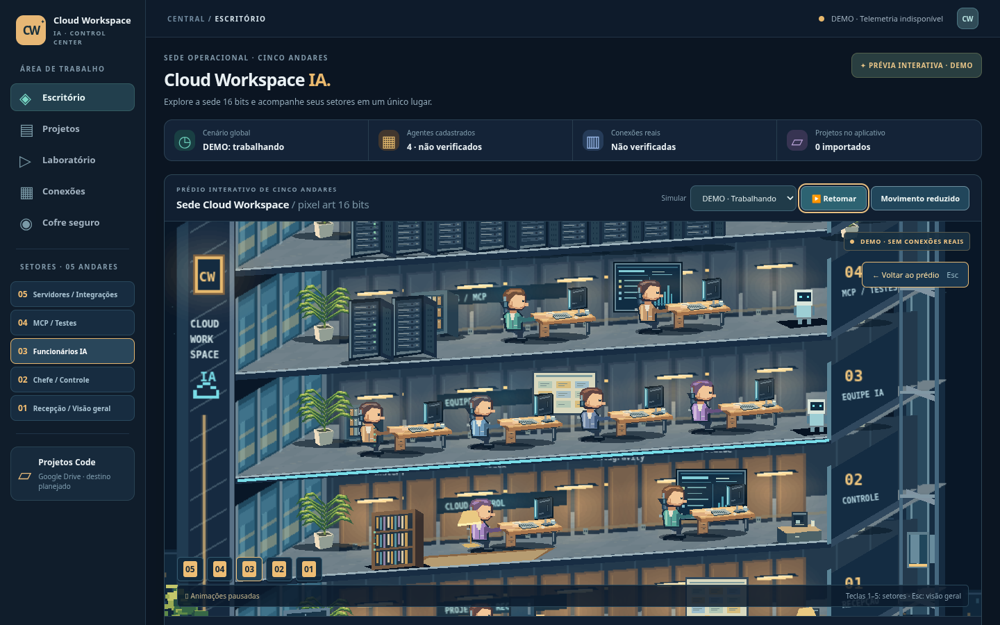
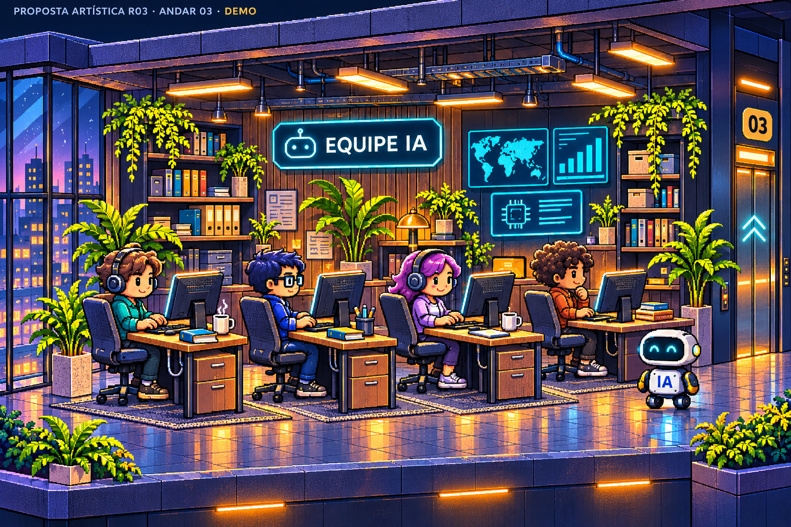

Alvo de composição e acabamento
Imagem original do projeto. Não é captura do aplicativo.

Referência aprovada × protótipo técnico rejeitado × propostas novas. As duas propostas são ilustrações estáticas geradas por IA para avaliação; não mostram o software funcionando. Clique nas imagens para abrir o original.
Imagem original do projeto. Não é captura do aplicativo.
Runtime preservado do commit 5c23397. Captura real existente em 1440×900.

Ilustração 1536×1024. Prédio preenche a composição; não foi implementado.

Captura de trabalho DEMO existente; não é a proposta.

Ilustração 1536×1024, mesma identidade visual da proposta do prédio.

Arquivos, prompts, proveniência, registros e backup: diretório R03 no mesmo repositório/PR #1. Nenhuma alteração no núcleo, runtime, contratos ou testes. Sem merge ou deploy.